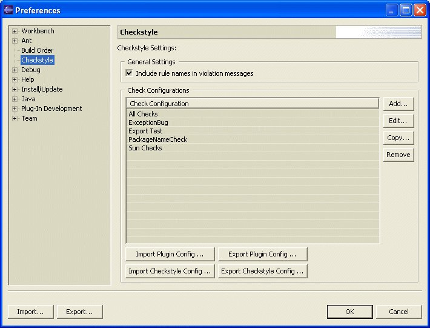
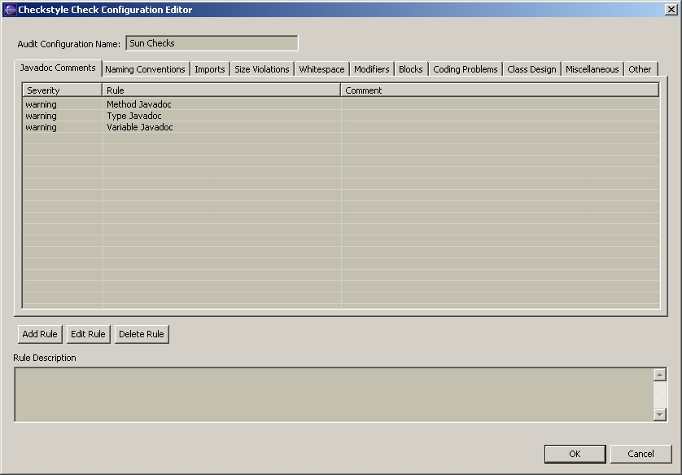
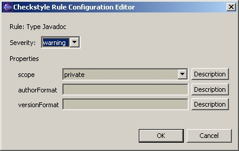

Eclipse Checkstyle Plug-in
Configuring Check Configurations
When Checkstyle inspects your source code it does so according to a Check Configuration. The Check Configuration specifies the configuration settings for each of the Checkstyle rules. By adjusting the rule settings you can control what items Checkstyle looks for in your code and how it reports a problem when it finds one.
Beginning with v3.1.0 of the Eclipse Checkstyle plug-in you can now define multiple Check Configurations within your workspace. Previous version of the plug-in only allowed one configuration for the entire workspace. The Configuring File Sets section describes how to select which Check Configurations are used to check which source files.
To create or modify a Check Configuration select Window -> Preferences -> Checkstyle, you will see the Checkstyle Preferences windows shown below.

To create a new Check Configuration click the Add button. To edit an existing Check Configuration select the configuration and click the Edit button, or double-click on the desired configuration. When creating a new Check Configuration or editing an existing one you will see the Check Configuration Editor shown below.

Give the Check Configuration a unique name. Next, add the check rules you want based on the items you are looking for in your code. To add a check rule select the Add button. To edit an existing rule select the Edit button or double click on the rule. When editing a rule you will see the Rule Configuration Editor shown below.

Since its possible to have multiple instances of the same rule within a single check configuration each rule instance can be given a short comment to help you remimber what each instance does. The Rule Configuration Editor will look a bit different for each rule, based on the rule's configuration properties. Not all rules have specific properties and only the severity level is configurable. Other rules may have several properties that can be configured by typing values, selecting from drop down menus, or selecting multiple items from a collection of check boxes. The appropriate set of configuration properties will be presented for each rule.
Detailed information on the configuration options for each rule can be found in the following section: